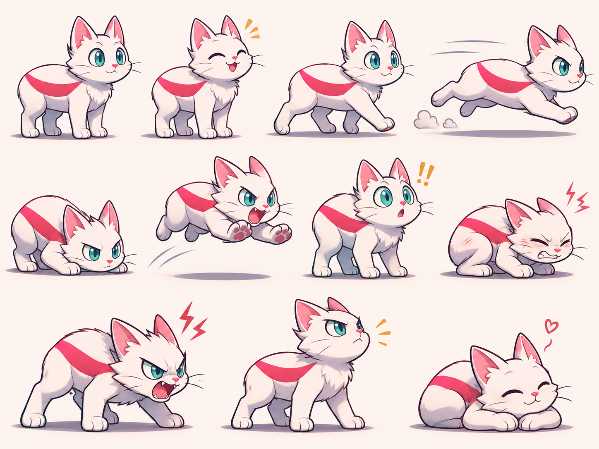
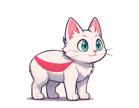
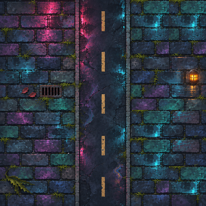
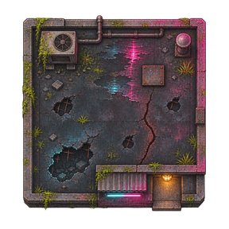
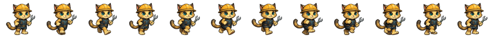
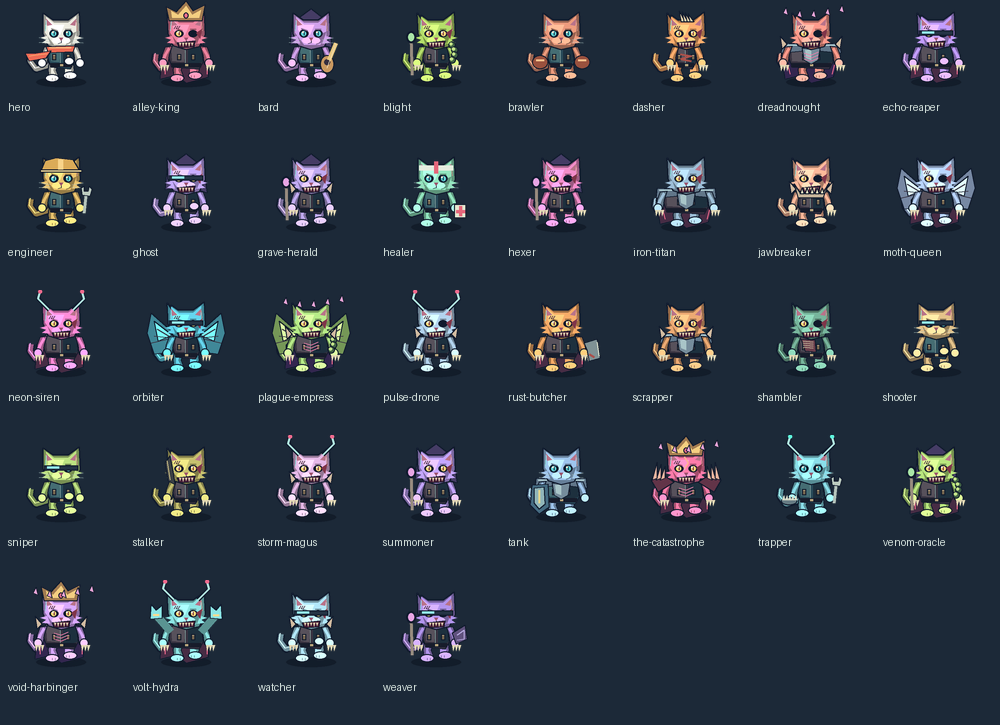

PASS-01 visual samples. These are inherited files, not generated 1.4 concepts, acceptance screenshots or new illustrations. See concept and byte-level inventory. No illustrative placeholders are presented as finished city art.

Primary anatomy and expressive contour reference: white quadruped, turquoise eyes, coral marking. Preserve identity.

Actual 288×224 hero cutout. Review at 48px world presentation; independent gun is runtime rendering.

Inherited 300×300 city material. Reference for dark ground/readability; no claim of new 1.4 painting.

Inherited 288×288 building. Reference for existing projection; new atlas must add painted material and distinct landmarks.

Inherited Engineer strip. Costume/color reference only; new detailed Mecha crew illustration still required.

Legacy cast board. This older upright hero is NOT the approved replacement for the quadruped. Existing boss silhouettes do not satisfy four new guardians.
Direction palette — code-native color samples
These swatches specify colors only; they are not painted asset samples.